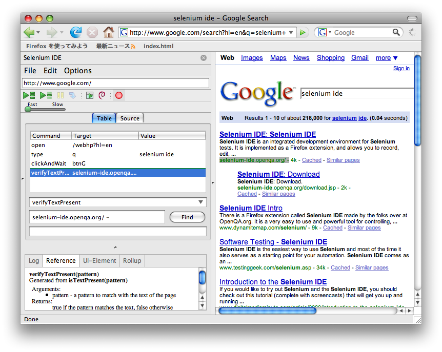

Selenium Overview
Selenium IDE
This Firefox plugin allows you to record and playback tests in the
browser. Here is a screen shot of it in use (in the side-bar
of
Firefox):

To install Selenium-IDE into firefox, go here
For more on Selenium IDE, see its website. Be sure
to check it out if you do not know what Selenium is, as the learning
curve is very small.